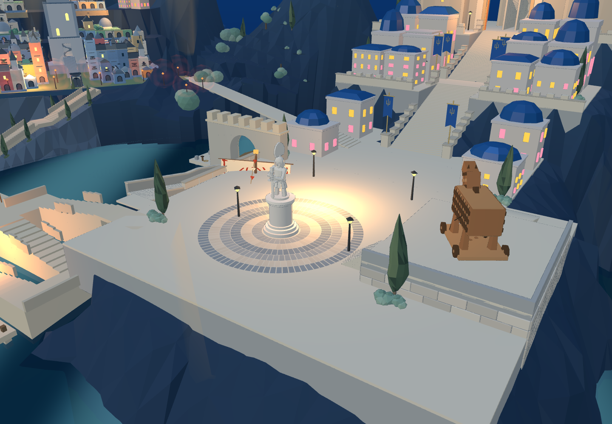
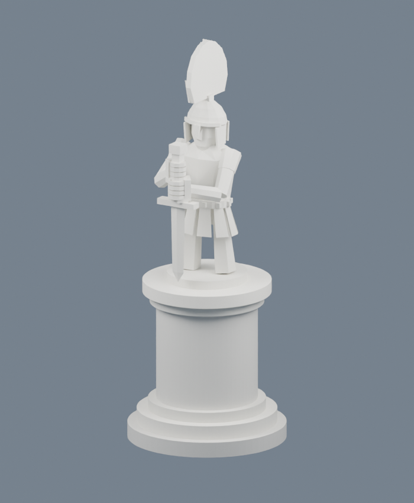
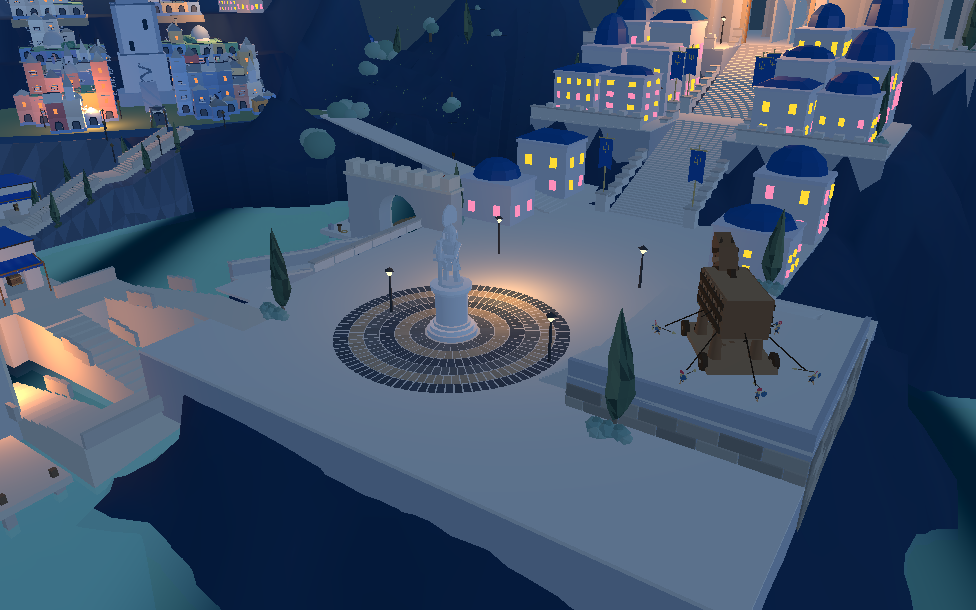

圆台底座 · 新城 200 米音乐范围
进入 8931 原游戏。圆台已由 Blender 回接，雕像人物保留原模型。

实际游戏：同心圆台与六圈地砖。
Blender r04：底座各层改为圆形，人物与高度保留。以新城广场为中心，玩家距离不超过 200 米时申请播放老人原曲。外侧10米逐渐提高音量，离开200米停止。电车与近处战斗仍由原音乐优先级接管，区域曲不会叠播。浏览器仍遵守静音与用户手势限制。

同一Godot工程：圆台已回接。网页实音频测试 · Godot 范围测试。Godot 全局检视使用当前相机作为听音位置；完整战斗音乐调度仍需随玩法接入。